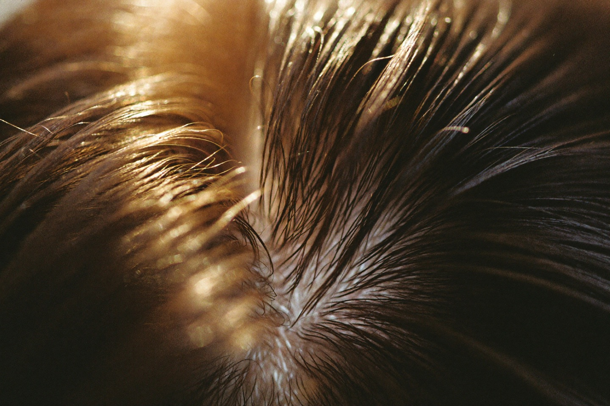
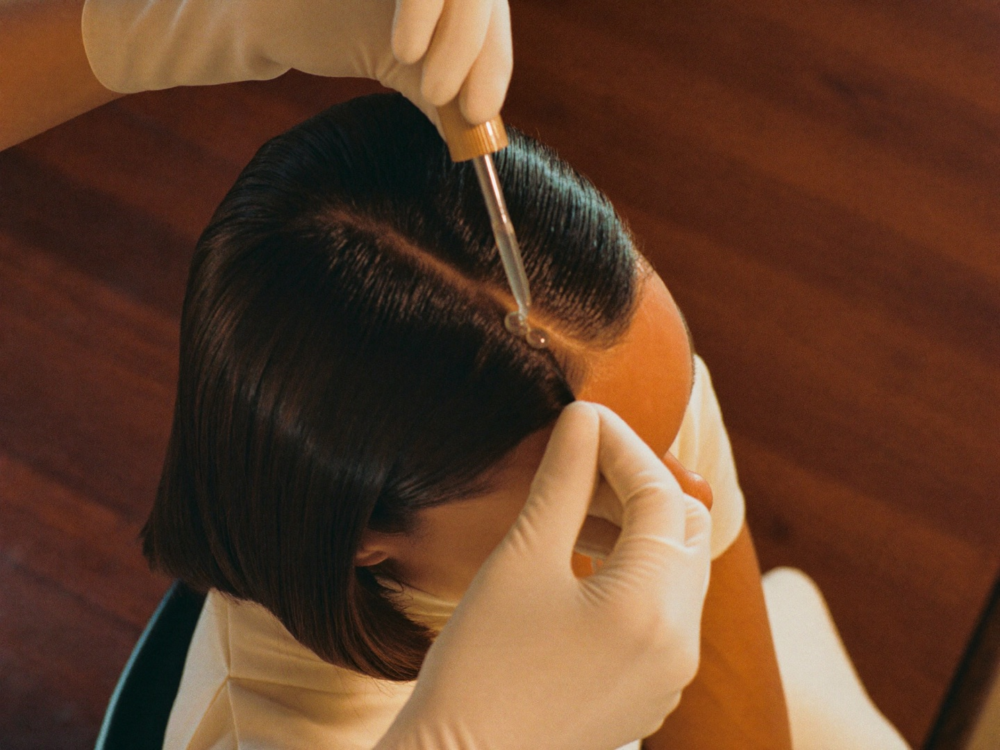

Hair care in Al Safa, Dubai. For thinning or tired hair, we look at what's underneath, including your bloodwork, then treat the scalp with mesotherapy, plasma and targeted care. Medically supervised.العناية بالشعر في الصفا، دبي. حين يخفّ الشعر أو يتعب، نُصغي إلى ما تحته، بما في ذلك تحاليل الدم، ثم نعتني بفروة الرأس بالميزوثيرابي والبلازما وعناية موجّهة. كل ذلك بإشراف طبي.
Thinning has many causes, and they do not all answer to the same care: iron, ferritin, vitamin D, thyroid, hormones. So we look closely at the scalp and, where it helps, at your bloodwork.لتساقط الشعر أسبابٌ كثيرة، ولا تستجيب كلّها للعناية نفسها: الحديد، الفيريتين، فيتامين د، الغدة الدرقية، الهرمونات. لذلك نفحص فروة الرأس عن قرب، ونطّلع على تحاليلك حين يفيد ذلك.
We hold to one rule: we will not push a treatment that will not help. What we find shapes the plan, and the plan is honest about what care can and cannot do.نلتزم بقاعدةٍ واحدة: لن نقترح عناية لا تنفعك. ما نجده هو ما يرسم الخطة، وتبقى الخطة صادقة في ما تستطيع العناية بلوغه وما لا تستطيع.
Hair also begins within. Iron, ferritin, vitamin D, thyroid and hormones leave their mark on the scalp, so a reading on the surface often pairs with a look within. We read the root causes, on the skin and under it.الشعر يبدأ من الداخل أيضاً. فالحديد والفيريتين وفيتامين د والغدة الدرقية والهرمونات تترك أثرها على فروة الرأس، لذا تقترن قراءة السطح غالباً بـنظرةٍ إلى الداخل. نقرأ الأسباب من جذورها، على البشرة وتحتها.


Every plan is medically supervised. Non-surgical. Honest about what care can and cannot do, with no guarantees.كل خطةٍ تجري بإشراف طبي، دون جراحة، وبصدقٍ في ما تستطيع العناية بلوغه وما لا تستطيع، بلا وعود.
We look closely at the scalp and listen to your history.نفحص فروة الرأس عن قرب ونُصغي إلى حكايتكِ.
A plan built around what we found, paced to your scalp.خطةٌ مبنيّة على ما وجدناه، بإيقاعٍ يناسب فروة رأسكِ.
Mesotherapy, PRP and targeted scalp care, medically supervised throughout.ميزوثيرابي وبلازما PRP وعناية موجّهة لفروة الرأس، بإشراف طبي في كل خطوة.
We track the scalp over time and adjust the plan as it responds.نتابع فروة الرأس مع الوقت ونعدّل الخطة حسب استجابتها.
Bato began in Kuwait in 2022. Al Safa is the Gulf chapter of that same practice, carried by the same people who built it.بدأت باتو في الكويت عام ٢٠٢٢. والصفا هي فصلٌ خليجيٌّ من المسيرة نفسها، يحملها الأشخاص أنفسهم الذين بنوها.
Medically supervised and delivered by our clinical team of licensed nurses and specialists. DHA-licensed, non-surgical.بإشراف طبي، ويقدّمها فريقنا الطبي من ممرضاتٍ وأخصائيين مرخّصين. مرخّصة من هيئة الصحة بدبي، ودون جراحة.